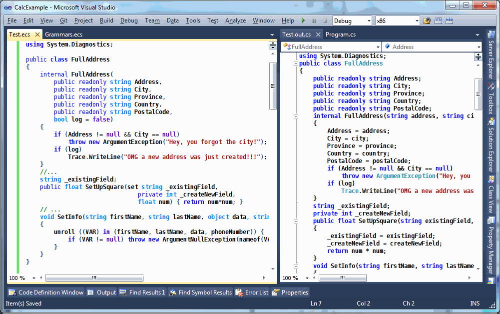
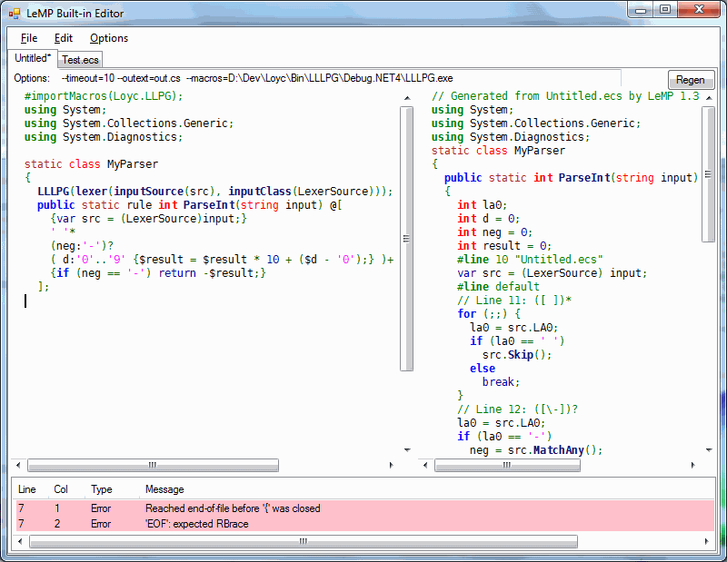

The Lexical Macro Processor transforms your C# code with a LISP-inspired macro system. Complete with Visual Studio integration & Linux-compatible editor.
LeMP is a tool that runs user-defined methods to transform syntax trees into other syntax trees. Each method takes a syntax tree as input, and returns another one as output. LeMP has a bunch of macros built in, and I will only cover four of the most useful ones in this initial article. You can write your own macros too, but I'll save that for a future article.

I've been working on this and related software for a couple of years, but it's only now that I think this thing is actually useful enough to present to a general audience. Let's get started!
LeMP comes with a Visual Studio Syntax Highlighter, a Visual Studio Custom Tool, command-line tools, and a standalone editor that works on Windows & Linux. All with complete source code.
C/C++ famously have lexical macros defined with the #define directive. These "macros" are not well-liked for several reasons:
C/C++ macros work at the lexical level, basically pasting text. Since they do not understand the underlying language, you can have bugs like this one:
/// Input
#define SQUARE(x) x * x
const int one_hundred = SQUARE(5+5)
/// Output
const int one_hundred = 5+5 * 5+5; // oops, that's 35
In contrast, LeMP parses the entire source file, then manipulates the syntax tree. Converting the tree back to C# code is the very last step, and this step will do things like automatically inserting parentheses to prevent this kind of problem.
Spooky action at a distance: C/C++ macros have global scope. If you define one inside a function, it continues to exist beyond the end of the function unless you explicitly get rid of it with #undef. Even worse, header files often define macros, which can sometimes accidentally interfere with the meaning of other header files or source files. In contrast, LeMP macros like replace (the LeMP equivalent of #define) only affect the current block (between braces). Also, one file cannot affect another file in any way, so many files can be processed concurrently.
Limited ability: there just aren't that many things you can accomplish with C/C++ macros; With LeMP you can load user-defined macros that can do arbitrary transformations (although it's outside the scope of this article, and not super convenient yet).
Weird language: the C/C++ preprocessor has a different syntax from normal C/C++. In contrast, LeMP code simply looks like some kind of enhanced C#.
So let's start with replace, the LeMP equivalent of #define.
replace() {...} is a macro that finds things that match a given pattern and replaces all instances of the pattern with some other pattern. For example,
/// Input
replace (MB => MessageBox.Show,
FMT($fmt, $arg) => string.Format($fmt, $arg))
{
MB(FMT("Hi, I'm {0}...", name));
MB(FMT("I am {0} years old!", name.Length));
}
/// Output
MessageBox.Show(string.Format("Hi, I'm {0}...", name));
MessageBox.Show(string.Format("I am {0} years old!", name.Length));
The braces are optional. If the braces are present, replacement occurs only inside the braces; if you end with a semicolon instead of braces, replacement occurs on all remaining statements in the same block.
This example requires FMT to take exactly two arguments called $fmt and $arg, but we could also capture any number of arguments or statements by adding the params keyword as shown here:
FMT($fmt, $(params args)) => string.Format($fmt, $args) // 1 or more args
FMT($(params args)) => string.Format($args) // 0 or more args
replace is more sophisticated tool than C's #define directive. Consider this example:
replace ({
foreach ($type $item in $obj.Where($w => $wpred))
$body;
} => {
foreach ($type $w in $obj) {
if ($wpred) {
var $item = $w;
$body;
}
}
})
{
var numbers = new[] { 1, 2, 3, 4, 5, 6, 7, 8, 9 };
Console.WriteLine("I wanna tell you about my digits!")
foreach (var even in numbers.Where(n => n % 2 == 0))
Console.WriteLine("{0} is even!", even);
foreach (var odd in numbers.Where(n => n % 2 == 1))
Console.WriteLine("{0} is odd!", odd);
}
Here, replace searches for foreach loops that have a specific form, and replaces them with a more optimized form:
var numbers = new[] {
1, 2, 3, 4, 5, 6, 7, 8, 9
};
Console.WriteLine("I wanna tell you about my digits!")
foreach (var n in numbers) {
if (n % 2 == 0) {
var even = n;
Console.WriteLine("{0} is even!", even);
}
}
foreach (var n in numbers) {
if (n % 2 == 1) {
var odd = n;
Console.WriteLine("{0} is odd!", odd);
}
}
unroll..in is a kind of compile-time foreach loop. It generates several copies of a piece of code, replacing one or more identifiers each time. Unlike replace, unroll can only match simple identifiers on the left side of in.
/// Input
void SetInfo(string firstName, string lastName, object data, string phoneNumber)
{
unroll ((VAR) in (firstName, lastName, data, phoneNumber)) {
if (VAR != null) throw new ArgumentNullException(nameof(VAR));
}
...
}
/// Output
void SetInfo(string firstName, string lastName, object data, string phoneNumber)
{
if (firstName != null)
throw new ArgumentNullException(nameof("firstName"));
if (lastName != null)
throw new ArgumentNullException(nameof("lastName"));
if (data != null)
throw new ArgumentNullException(nameof("data"));
if (phoneNumber != null)
throw new ArgumentNullException(nameof("phoneNumber"));
...
}
This example also used the nameof() macro to convert each variable name to a string. It's one of the simplest macros; here's its implementation in StandardMacros.cs:
[LexicalMacro(@"nameof(id_or_expr)", "Converts an expression to a "
+"string (note: original formatting is not preserved)")]
public static LNode nameof(LNode nameof, IMacroContext context)
{
if (nameof.ArgCount != 1)
return null; // reject
return F.Literal(ParsingService.Current.Print(nameof.Args[0],
context.Sink, ParsingService.Exprs));
}
Sadly there's no way to view the documentation attached to the macro except by looking at the source code (hmm, maybe I could write a macro for this...?)
Some developers have to implement the INotifyPropertyChanged interface a lot. Implementing this interface often involves a lot of boilerplate and code duplication, and it's error prone because the compiler won't tell you if the string you send to PropertyChanged is incorrect (Plus, I would personally question whether INotifyPropertyChanged is the right way to accomplish change notification, but that's a subject for another day). Using normal C#, you can avoid some code duplication by sharing common code in a common method, like this:
public class DemoCustomer : INotifyPropertyChanged
{
public event PropertyChangedEventHandler PropertyChanged;
/// Common code shared between all the properties
private bool ChangeProperty<T>(ref T field, T newValue,
string propertyName, IEqualityComparer<T> comparer = null)
{
comparer ??= EqualityComparer<T>.Default;
if (field == null ? newValue != null : !field.Equals(newValue))
{
field = newValue;
if (PropertyChanged != null)
PropertyChanged(this, new PropertyChangedEventArgs(propertyName));
return true;
}
return false;
}
private string _customerName = "";
public string CustomerName
{
get { return _customerName; }
set { ChangeProperty(ref _customerName, value, "CustomerName"); }
}
private object _additionalData = null;
public object AdditionalData
{
get { return _additionalData; }
set { ChangeProperty(ref _additionalData, value, "AdditionalData"); }
}
private string _companyName = "";
public string CompanyName
{
get { return _companyName; }
set { ChangeProperty(ref _companyName, value, "AdditionalData"); }
}
private string _phoneNumber = "";
public string PhoneNumber
{
get { return _phoneNumber; }
set { ChangeProperty(ref _phoneNumber, value, "PhoneNumber"); }
}
}
That's not bad, but with unroll we can define those four properties more quickly and without making the mistake I just made (did you spot the mistake?):
unroll ((TYPE, PROP_NAME) in (
(string, CustomerName),
(object, AdditionalData),
(string, CompanyName),
(string, PhoneNumber)
)) {
replace(FIELD_NAME => concat_id(_, PROP_NAME))
{
private TYPE FIELD_NAME = "";
public TYPE PROP_NAME
{
get { return FIELD_NAME; }
set { ChangeProperty(ref FIELD_NAME, value, nameof(PROP_NAME)); }
}
}
}
This code produces four properties, and each additional property only requires one line of code! Here's the first output:
private string _CustomerName = "";
public string CustomerName
{
get {
return _CustomerName;
}
set {
ChangeProperty(ref _CustomerName, value, "CustomerName");
}
}
This code is using two extra tricks beyond just unroll and replace:
nameof(PROP_NAME) converts PROP_NAME to a string.concat_id(_, PROP_NAME) concatenates two identifiers to produce a new identifier; in this case I'm just adding an underscore to the beginning of the PROP_NAME. A synonym for concat_id is _`##`PROP_NAME, which rembles the ## operator in C/C++, and you can even write ##(_, PROP_NAME). Finally, you can use this to convert strings to identifiers (concat_id("dog")) or concatenate more than two things (concat_id("dog", 'h', 0, use)).Please note that the replace command is actually required in this example, because the parser understands that
private TYPE FIELD_NAME = "";
is creating a variable, whereas
private TYPE concat_id(_, PROP_NAME) = "";
would just confuse the parser: the code appears to be declaring a method called concat_id and assigning a value to it.
Note: when using replace inside unroll one should generally include curly braces (i.e. replace (...) {...}) so that there are two sets of braces in total. The reason is that when unroll is done, the outer braces disappear, which means that if you didn't use braces with replace, your replace command applies to the entire rest of the block instead of the small bit of code you intended.
I don't know about you, but I write a lot of "simple" classes and structs, particularly the kind known as "plain-old data" or POD, meaning, little groups of fields like this:
public class FullAddress
{
public readonly string Address;
public readonly string City;
public readonly string Province;
public readonly string Country;
public readonly string PostalCode;
internal FullAddress(string address, string city,
string province, string country,
string postalCode, bool log = false)
{
Address = address;
City = city;
Province = province;
Country = country;
PostalCode = postalCode;
if (Address != null && City == null)
throw new ArgumentException("Hey, you forgot the city!");
if (log)
Trace.WriteLine("OMG a new address was just created!!!");
}
...
}
You don't have to write classes like this very many times before you start to get annoyed at having to repeat the same information over and over: each of "address", "city", "province", "country" and "postalCode" are repeated four times with varying case, "string" is repeated ten times, and "FullAddress" is repeated twice (three times if you add a default constructor).
With LeMP and Enhanced C# you get the same effect with much shorter code:
public class FullAddress {
internal FullAddress(
public readonly string Address,
public readonly string City,
public readonly string Province,
public readonly string Country,
public readonly string PostalCode,
bool log = false)
{
if (Address != null && City == null)
throw new ArgumentException("Hey, you forgot the city!");
if (log)
Trace.WriteLine("OMG a new address was just created!!!");
}
...
}
This code generates virtually identical output to the original class above. A macro notices attributes like public on the parameters of the constructor, generates matching fields, and then sets those fields in the body of the constructor. Currently you can't use properties as constructor parameters (but I'll probably add that later).
A feature similar to this was being considered for C# 6, called "primary constructors". They looked like this:
struct Pair<T>(T first, T second)
{
public T First { get; } = first;
public T Second { get; } = second;
...
}
But primary constructors were limited:
FullAddress.log.public (FullAddress has an internal constructor). In contrast, the feature I'm showing you actually has nothing to do with constructors. True story, when I wrote the unit tests for this feature and I forgot to test it on constructors... so naturally it didn't work on constructors.
This macro, also known as SetOrCreateMember, will work on any method, and you can use the set attribute to merely change a field instead of creating a field:
/// Input
string _existingField;
public float SetUpSquare(set string _existingField,
private int _createNewField,
float num) { return num*num; }
/// Output
string _existingField;
private int _createNewField;
public float SetUpFields(string existingField, int createNewField, float num)
{
_existingField = existingField;
_createNewField = createNewField;
return num * num;
}

If you like this tool, you'll want to run it. Simply download the link that came with this article to get LeMP version 1.3.0. Then you can either
For very esoteric reasons (long story short: blame Microsoft), it is distributed as two separate parts:
LoycFileGeneratorForVs.exe (it'll start as Administrator) and click Register (install). It supports all VS versions from to VS 2005 to VS 2013, including Express editions.LoycSyntaxForVs2010.vsix. It supports VS 2010, VS 2012, and VS2013, Professional Editions only (including Premium and Ultimate, of course)To use the custom tool,
using System;).out.cs.Unfortunately, in the end, Visual Studio doesn't quite treat the two extensions as separate things: for some reason I don't understand, the LeMP Custom Tool doesn't use the Loyc DLLs in is own directory, instead it always uses the same DLLs as the syntax highlighter. If there is even the slightest version mismatch between the syntax highlighter and the LeMP Custom Tool, LeMP will not work and you'll get an error message like MissingMethodException or "unable to load Loyc.Collections.dll" or something like that. If you get this error, a workaround is to uninstall the syntax highlighter (go to Tools | Extension Manager, Click LoycSyntaxForVs, Uninstall, and Restart Now).
I hope you don't get the dreaded "Cannot find custom tool 'LeMP' on this system." because that error has many different causes and I have worked very hard to try to avoid it.
By the way, if you'd like me to write an article about how to write VS syntax highlighters, I can do that too... I already wrote one for Single file generators, after all...
There's one more macro I have to tell you about, and it's huge - literally, it comes in its own 353 KB assembly. That's pretty big for a macro.
LLLPG, the Loyc LL(k) Parser Generator, generates parsers and lexers from LL(k) grammars. It's best illustrated by an example. Here's a function that parses integers:
/// Input
#importMacros(Loyc.LLPG); /// this line is optional if Custom Tool="LLLPG"
using Loyc.Syntax.Lexing;
static class MyParser
{
// Configure the parser generator to read data from 'src'
LLLPG(lexer(inputSource(src), inputClass(LexerSource)));
public static rule int ParseInt(string input) @[
{var src = (LexerSource)input;}
' '*
(neg:'-')?
(d:'0'..'9' {$result = $result * 10 + ($d - '0');})+
{if (neg == '-') return -$result;}
// LLLPG returns $result automatically
];
}
/// Output
using Loyc.Syntax.Lexing;
static class MyParser
{
public static int ParseInt(string input)
{
int la0;
int d = 0;
int neg = 0;
int result = 0;
// line 10
var src = (LexerSource) input;
// Line 11: ([ ])*
for (;;) {
la0 = src.LA0;
if (la0 == ' ')
src.Skip();
else
break;
}
// Line 12: ([\-])?
la0 = src.LA0;
if (la0 == '-')
neg = src.MatchAny();
d = src.MatchRange('0', '9');
// line 13
result = result * 10 + (d - '0');
// Line 13: ([0-9])*
for (;;) {
la0 = src.LA0;
if (la0 >= '0' && la0 <= '9') {
d = src.MatchAny();
// line 13
result = result * 10 + (d - '0');
} else
break;
}
if (neg == '-')
return -result;
return result;
}
}
To use this macro you also need an implementation of the API functions that you see in the generated code, such as LA0, Skip(), etc. The recommended implementations of these APIs are the LexerSource and ParserSource<Token> classes in Loyc.Syntax.dll, but standalone (no-DLL) implementations of the LLLPG APIs are also bundled with LLLPG.
Note: this example uses new features of LLLPG 1.3 which (as of May 25) are not published on CodeProject but are published on GitHub in the Loyc repo.
Enhanced C# is normal C# with a bunch of extra syntax. This actually has nothing to do with LeMP, aside from the fact that a some of the new syntax exists simply to allow macros to make use of it. Unlike some other macro systems, LeMP and EC# do not allow you to define new syntax. EC# is a "fixed-function" parser, not a programmable one.
A few bits of this syntax have been used in the article already:
identifier (args) {statements;}. It is used to invoke macros, although there are also many macros that don't use this syntax. Macro blocks can also have the simpler form identifier {statements;}. Property getters and setters like get {...} and set {...} are actually parsed using this rule.Add(x, y), you are allowed to write x `Add` y instead. It means the same thing.public, static, override, and params are "attribute keywords" that modify the meaning of whatever comes afterward. In normal C# you can only put these attributes on things like fields, methods, and classes; but enhanced C# allows you to put attributes on any expression, in case a macro might use the attribute. That explains why Constructor(public readonly int Foo) {} is a valid statement. It also explains why $(params args) is used in the replace macro: the replace macro is taking advantage of the fact that params is already defined as a C# attribute keyword!yield and partial that are normally not keywords, unless used in a specific context. I generalized this idea by allowing my parser to treat any identifier as a contextual keyword. Thus set is a contextual keyword in set string _existingField and rule is a contextual keyword in public static rule int ParseInt(string input).@[ list of tokens ]. A token tree is a collection of tokens with parentheses, brackets and braces grouped together (e.g. @[ } ] is an invalid token tree because the closing brace isn't matched with an opening brace). Long after the file is parsed, the token tree can be reparsed by a macro (e.g. LLLPG) to give meaning to its contents.EC# includes many other adjustments to the syntax of C#, and I believe they are nearly 100% backward compatible with standard C#, although the parser may contain bugs and I welcome your bug reports.
You might be wondering, "hey, didn't you have to do a lot of work to extend the C# parser to support all this extra syntax?" and the answer is: actually, no, not really; I mean it was a lot of work to parse C# from scratch, but I doubt my Enhanced C# parser is any more complex than the standard one. In many ways the syntax of EC# is more regular than standard C#; for instance a method's formal parameters are essentially just a list of expressions, so this method is parsed successfully:
public void Foo<T>(new T[] { "I don't think this belongs here" }) {}
Effectively, I've shifted some of the burden of checking valid input to later stages of the compiler--stages which, incidentally, don't exist yet. This design has two advantages:
Macros can take advantage of any strange syntax this allows. For example, remember the replace macro?
replace ($obj.ToString() => (string)$obj) {...}
The expression $obj.ToString() => (string)$obj re-uses the lambda operator => for a new purpose it was never designed for. But in order for this to parse successfully, the parser has to be pretty forgiving in what it will accept.
The parser tends to be slightly simpler than a standard C# parser because, having made the language more regular, my parser doesn't have to include as many special cases.
Enhanced C# is built on the concept of a "universal syntax tree" that I call the Loyc tree. Rather than parsing to a syntax tree designed specifically for C#, the EC# parser parses to this more general form. If you want to write your own macros, you'll probably have to deal with Loyc trees.
If you've ever programmed in LISP, you know that there is no separate concept of "statements" and "expressions": everything is an expression. Arguably the most interesting thing about Enhanced C# is that it's also an expression-based language. Of course, the parser must make a clear distinction between statements and expressions: X * Y; is a pointer variable declaration, whereas N = (X * Y); is a multiplication. Statements end in semicolons, while expressions, er, don't.
But EC# tries hard to transform C# into an expression-based language, and once parsing is complete, the distinction between statements and expressions disappears.
For example, although no translation is implemented from this to plain C#, I hope this will work someday soon:
int digit = '0' + {
switch(str)
{
case "one": 1
case "two": 2
case "three": 3
}
}; // for now, outer braces are required
There being no distinction between statements and expressions, it's no big surprise that this works:
/// Input
string nums = string.Concat(
unroll(N in (1,2,3,4,5,6,7)) { nameof(N); }, " [the end]"
);
/// Output
string x = string.Concat("1", "2", "3", "4", "5", "6", "7", " [the end]");
unroll doesn't know or care that it's located in an "expression context" instead of a "statement context".
When the parser is parsing expressions (e.g. 1,2,3) they are separated by commas, but curly braces normally cause a switch to statement-parsing mode; therefore nameof(N) is followed by a semicolon. The semicolon isn't part of the syntax tree, it's merely marks the end of each statement. Then when the unroll macro is done, it deletes itself along with the curly braces, leaving only a list of expressions "1", "2", "3", etc. Because these are printed in a location where expressions, are expected, they are separated by commas and not semicolons.
On the other hand if we simply write
unroll(N in (1,2,3,4,5,6,7)) { nameof(N); }
The output is separated by semicolons:
"1";
"2";
"3";
"4";
"5";
"6";
"7";
This output, of course, isn't valid C#, but it is a perfectly valid syntax tree. Actually more of a list. Whatever.
This concept of an expression-based language explains some otherwise puzzling things about EC#. For example, if I give EC# the following input:
[#static]
@#fn(int, Square, #(#var(int, x)), @`{}`( #return(x*x) ));
It spits out the following output:
static int Square(int x)
{
return x * x;
}
What the hell happened? No, @#fn is not some kind of bizarro preprocessor directive. What you're looking at is a representation of the syntax tree of a method. #fn means "define a function". The @ sign simply means "this is an identifier, not a preprocessor directive". It's only required for identifiers like #if that coincidentally are also preprocessor directives, and for identifiers that contain punctuation marks.
That's right. In EC#, identifiers can contain punctuation marks.
Anyway, the # sign is otherwise not special to the parser; # is treated as an identifier character, not unlike an underscore.
#fn takes four arguments (and an unlimited number of attributes): the return type (int), the method name (Square), the argument list (#(#var(int, x)) is a list containing a single item; #var(int, x) declares a variable called x), and the method body. The rarely-used notation @`{}` is an identifier named "{}" that is being "called" with one parameter, the #return statement. Of course, the braces themselves are not a function, and when I say @`{}` is being "called", I simply mean that expressions, which we call "arguments", are being associated with an identifier named "{}".
There's something called an "EC# node printer" whose job is to print C# code. When it sees a tree like
@#fn(#of(@`?`, double), Sqrt, #(#var(double, x)),
{ return @`?`(x < 0, null, Math.Sqrt(x)); }
);
It recognizes this as a perfectly normal syntax tree for a function declaration, so it prints
double? Sqrt(double x)
{
return x < 0 ? null : Math.Sqrt(x);
}
As you can see, you can rather freely mix "prefix notation" like #var(double, x) with ordinary notation like Math.Sqrt(x). I recommend not using things like #fn or #var directly, since the actual syntax tree for a method or variable declaration is not what I'd call stable; I might reform these trees in the future.
The nice thing about representing programming languages with a "Loyc tree" is that it provides a starting point for converting code between programming languages. In theory one could define some kind of "Standard Imperative Language" as an intermediate representation, a go-between that would help convert any source language to any target language.
The other nice thing about Loyc trees is that LeMP can operate on any Loyc tree, it doesn't matter what programming language it came from. Currently LeMP only works on two languages, EC# and a small language I designed called Loyc Expression Syntax (LES), but someday I hope it will support other languages like Java, ES6, Python, or whatever the community is willing to write parsers and printers for.
You might find it fun to go in the reverse direction and see what kind of syntax tree your ordinary C# code is parsed as. Just write some normal C# code in your .ecs file:
using System.Collections.Generic;
class MyList<T> : IList<T> {
int _count;
public int Count { get { return this._count; } }
}
Then change the Visual Studio Custom Tool to "LeMP_les" to see the output as an LES syntax tree:
#import(System.Collections.Generic);
#class(#of(MyList, T), #(#of(IList, T)), {
#var(#int32, _count);
[#public] #property(#int32, Count, {
get({
#return(#this._count);
});
});
});
Okay, that's enough bizzaro world for one day.
Final thought: if you could add features to C#, what would they be? If there's a way to treat that feature as a purely syntactic transformation ("syntactic sugar"), chances are good there's some way to accomplish it with LeMP.
I have many more macros to show you, but those above are perhaps the most useful ones I've made, and depending on how much interest people show here, I'll publish it another article sooner or later.